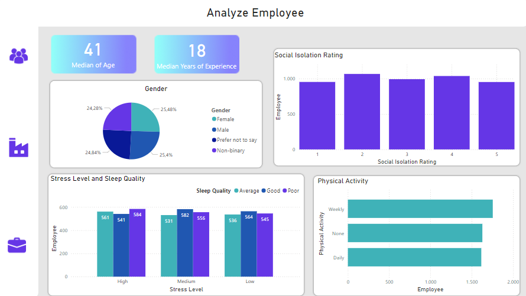
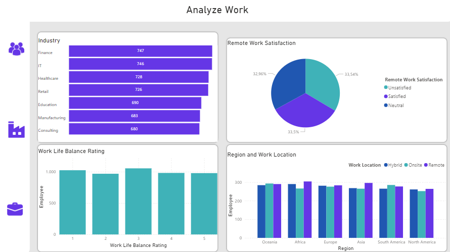
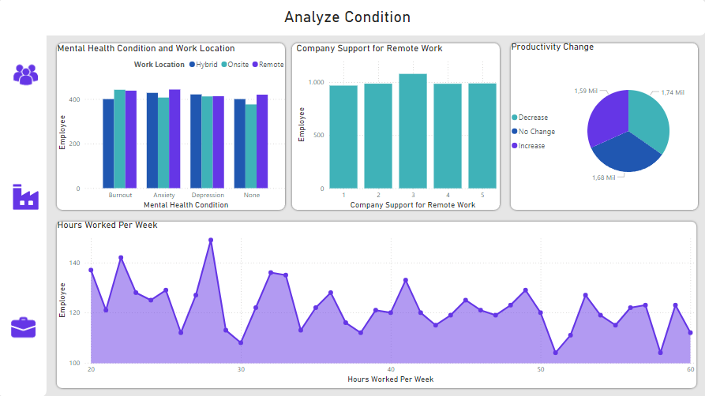

Bem-vindo(a) ao relatório de análise de Trabalho Remoto e Saúde Mental
Este conjunto de dados avalia a influência do trabalho remoto na saúde mental, reunindo respostas de indivíduos de diversas faixas demográficas.
Inclui indicadores principais, como satisfação com o trabalho, níveis de ansiedade e a gestão entre vida pessoal e profissional..
Os dados foram extraídos do Kaggle, e você pode acessá-los seguindo o link: https://www.kaggle.com/datasets/waqi786/remote-work-and-mental-health..
Essa foi uma análise um pouco mais simples, sendo que as ferramentas utilizadas foram apenas o Site da fonte de dados, o Excel e o Microsoft Power BI.
Verifiquei a consistência dos dados, fiz a transformação e limpeza necessária.
Na análise do perfil do funcionário, é possível observar que a média de idade é de 41 anos entre os 5 mil perfis analisados. Também podemos ver que a média de experiência de trabalho é de 18 anos.
Temos que, o genêro dos funcionários está bem distribuido, quase que 25% para cada genêro.
Vemos que a maioria dos funcionários que dormem mal, tem um nível de estresse mais elevado. A maioria dos funcionários que dorme mais ou menos tem um nível de estresse médio. A maioria dos funcionários que dormem bem tem um nível de estresse também médio
Também podemos observar que a maioria dos funcionários fazem exercícios físicos toda semana.
Analyze Employee
Na análise sobre o trabalho, podemos observar que a maioria dos funcioários são do setor de Finanças e TI, enquanto a minoria é do setor de consultoria.
Em relação a quanto os funcionários estão satisfeitos sobre o trabalho remoto, temos uma distribuição bem uniforme.
No modo de trabalho é possível ver que a maioria das pessoas trabalham de forma remota, enquanto a minoria trabalha de forma presencial, sendo o modelo híbrido a média.
Analyze Work
Nesta análise, podemos observar a condição mental dos funcionários por modelo de trabalho, prescencial, remoto e híbrido .
Vemos que a maioria das pessoas que possuem burnout trabalham de forma presencial, sendo que quem trabalha de forma remota está quase se igualando.
A maioria dos funcionários que possuem ansiedade trabalham de forma remota. E a maioria dos funcionários que possuem depressão trabalham de forma híbrida
Podemos ver também que a maioria dos funcionários trabalham apenas cerca de 26 horas por semana.
Análise Compras
